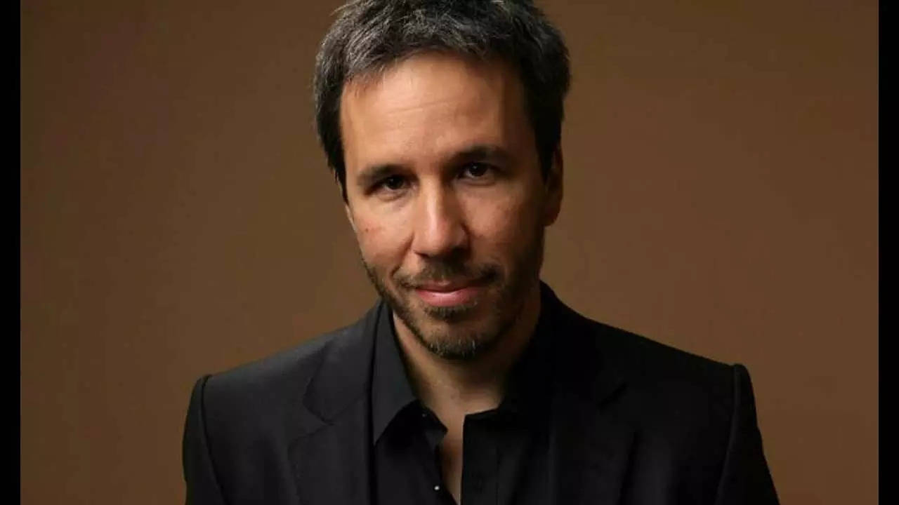

Villeneuve was born on October 3, 1967, in the village of Gentilly in Bécancour, Quebec, to Nicole Demers, a homemaker, and Jean Villeneuve, a notary. He is the eldest of four siblings. His younger brother, Martin, also became a filmmaker. Villeneuve attended the Séminaire Saint-Joseph de Trois-Rivières and later studied science at the Cégep de Trois-Rivières. He studied cinema at the Université du Québec à Montréal.
